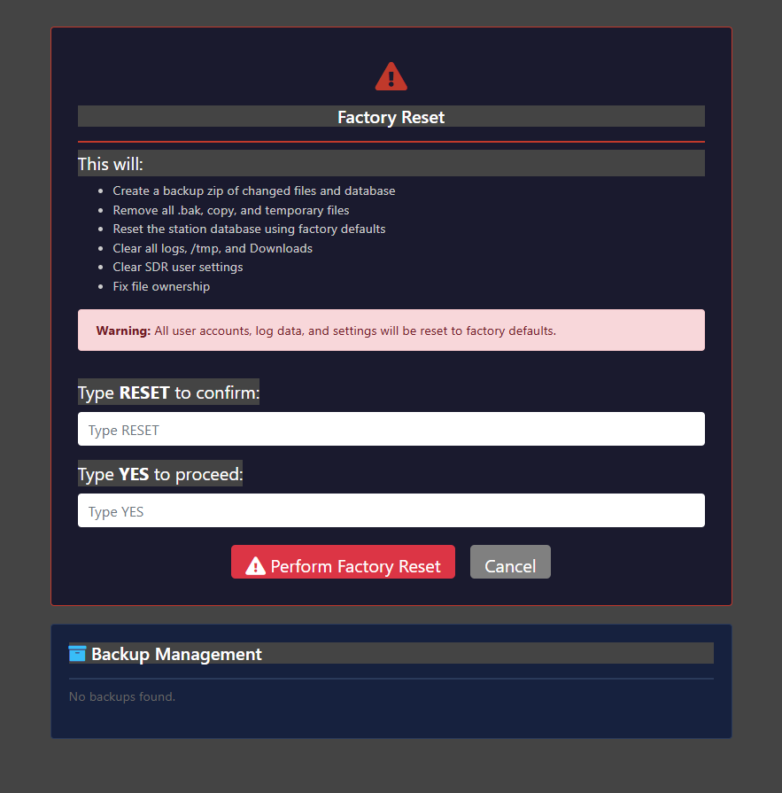

|
<< Click to Display Table of Contents >> Navigation: Technical > |

Factory Reset returns the RigPi station database, accounts, saved station settings, and protected remote-service connections to factory condition. Use it when preparing a RigPi for a new owner or when intentionally starting a clean station configuration. It is not required for an ordinary reboot or a minor configuration problem.
This operation is destructive. All user accounts, logbook data, radio settings, and per-user SDR settings are reset. Export anything you need before continuing. Factory Reset does not reimage the SD card or reinstall the operating system.
1.Export each required logbook as ADIF.
2.Download SDR activity recordings and other files you want to keep.
3.Record radio, rotor, keyer, audio-device, and SDR-device settings that will be needed later.
4.Make sure you can sign in to the DuckDNS or Cloudflare, Elmer, QRZ or HamQTH, Pushover, and email-provider accounts that will be reconnected.
5.If Backup Management shows an archive you intend to keep, download it to another computer before resetting.
SSH keys: Factory Reset removes the key managed by Temporary Remote Support, but it intentionally preserves unrelated SSH keys in the owner's authorized_keys file. Remove any personal SSH keys separately before selling or transferring the SD card.
1.Sign in to RigPi as an administrator.
2.Open Settings > System and select Factory Reset.
3.Read the warning and verify that required data has been exported.
4.Enter RESET in the first confirmation box.
5.Enter YES in the second confirmation box.
6.Select Perform Factory Reset. Do not close the page, remove power, or reboot while the operation is running.
7.When Reset Complete appears, return to RigPi or log out.
Area |
Reset behavior |
Accounts and station database |
The database is rebuilt from the factory station.sql. User accounts, logs, radio configuration, notification settings, and other station records return to factory defaults. |
Local SDR addresses |
Each account is assigned its numbered local SDR path. Account 1 uses http://<hostname>.local/sdr1; subsequent accounts use /sdr2, /sdr3, and so on. |
SDR data |
Per-user SDR JSON settings, saved state, temporary files, and activity recordings are cleared. Factory SDR instance configuration remains available for a new setup. |
Operating data |
RigPi logs, temporary files, Downloads, shell history, and WSJT-X and Fldigi user logs are cleared. Local Chromium and Firefox profiles are erased, including saved passwords, browsing history, cookies, sessions, site storage, and caches. |
Cloudflare |
The local connector is stopped and uninstalled as a service, and its local token and credentials are removed. The tunnel and DNS records in the Cloudflare account are not deleted. |
Native HTTPS (DuckDNS) |
Native HTTPS and automatic address updates are disabled. The local DuckDNS token and Let’s Encrypt certificate are removed. The hostname remains in the owner’s DuckDNS account and can be reconnected after reset. |
Elmer |
The local Elmer station credential is removed and the service is disabled. The station must be paired again before Ask Elmer and hosted Elmer Control can be used. |
Temporary Remote Support |
The managed support key is revoked and the temporary support bridge is stopped. |
Other protected services |
WireGuard credentials are removed. ZeroTier is stopped and disabled, and its identity, access tokens, peer cache, and joined networks are erased without uninstalling ZeroTier. QRZ, HamQTH, Pushover, and SMTP settings return to the values in the restored factory database. |
Installed software |
RigPi, Help, the operating system, and installed applications remain. Factory Reset is not an SD-card reimage. |
Factory Reset creates a private temporary archive of changed RigPi files and the station database before making destructive changes. After a normal successful reset and security verification, the newly created recovery archive is removed so personal station data is not left on a reset image. If security cleanup fails, the reset stops and retains the archive for recovery.
Backup Management lists any previously retained factory_reset_backup_*.zip archives. The icons allow an administrator to download, restore, or delete an available archive. Restore overwrites saved RigPi/SDR files and imports the archived station database.
A restore is not a complete service reconnection. The archive does not contain the removed DuckDNS token and certificate, Cloudflare connector, Elmer station identity, WireGuard credentials, or ZeroTier identity and network memberships stored outside the station database. Reconnect those services afterward. A restored database can contain sensitive account and notification settings, so keep its ZIP private and delete it when it is no longer needed.
The local desktop browser closes during Factory Reset. Chromium or Firefox must be stopped before its saved passwords and history can be erased reliably. Browsers running on another computer, phone, or tablet are outside RigPi and cannot be cleared by Factory Reset.
1.Sign in with the factory administrator account and immediately set a strong password.
2.Open User Settings and confirm that Account 1 uses /sdr1.
3.Configure and test the radio, rotor, keyer, audio devices, and SDR hardware.
4.Reconnect the RigPi Elmer Service.
5.Reconnect QRZ or HamQTH, Pushover, and Email Notifications as needed.
6.Reconnect one HTTPS method: configure Native HTTPS using the existing DuckDNS hostname and current token, or reconnect Cloudflare using its connector token.
7.Import saved ADIF logs and restore other user data deliberately rather than copying credentials from an unknown system.
8.Test local tuning, browser audio, PTT into a dummy load, remote access, Ask Elmer, and notifications.
Read the result shown on the Factory Reset page. The detailed log is /var/log/rigpi-factory-reset.log. A security-verification failure intentionally stops the reset if DuckDNS HTTPS, Cloudflare, Elmer, WireGuard, or other protected credentials were not fully detached. Do not transfer the RigPi until that failure has been corrected and the reset completes.
RigPi Help — Factory Reset